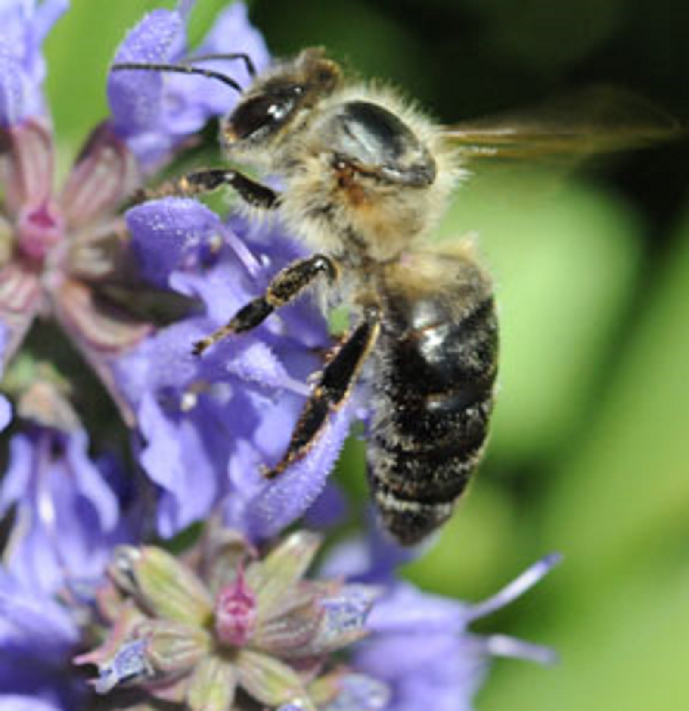

Italian
|| apis mellifera ligustica ||

relatively gentle + non-aggressive
Originally from Italy, Italian bees have become the most popular bee in the United States as they have been considered the best all-purpose bee and have relatively gentle behavior. They are the most widely distributed of all honey bees due to their ability to adapt to most climates. These bees are yellow in color, overwinter well and build up quickly in spring.
German
|| apis mellifera mellifera ||

defensive and may be difficult to manage
Honey bees were brought to America in the 17th century by the early European settlers and they were mostly likely of the German sub species. One of the German bees’ more favorable characteristics is that they are a hardy strain, able to survive long, cold winters in northern climates. However, because of their defensive nature and their susceptibility to many brood diseases (such as foulbrood), this species lost favor with beekeepers well over a century ago.
Carniolan
|| apis mellifera carnica ||

easy to work with and best wintering bee
Carniolans are extremely gentle in their behavior toward beekeepers. They are the second most popular race among beekeepers after the Italian and are darker brown to black in color. Their ability to defend themselves against insects and pests make them a great choice for beekeepers. The bee originates from Slovenia but also can be found in parts of Hungary and Romania.
Caucasian
|| apis mellifera caucasia ||
has a longer tongue than most races and can reach more nectar
These honey bees are relatively gentle in nature and known to be silver + dark brown in color. They produce an excessive amount of propolis which may be beneficial if you collect it but it can make it more difficult to work in the hive if you don't. The Caucasian brood has a slow start up in the spring which may disappoint some beekeepers and gardeners.
Buckfast
|| apis mellifera hybrid ||
man-made bee species
Buckfast honey bees were developed by Brother Adams in the 20th century and are a mixed race of bees. They have become very popular among beekeepers due to their extremely gentle behavior, their ability to build up rapidly in the spring and produce great crops. They drop back in population come fall and winter extremely well.
Russian
|| apis mellifera (of the Primorsky Krai region of Russia) ||

expensive but resistant to destructive mites
The Russian honeybee came from the Primorsky region and have evolved traits of resistance to natural mites since it lived in a region that is home to Varroa Mite and Tracheal Mites. They are a dark drown to black in color and resemble the Carniolan bee. The bees winter well in extremelycold temperatures in small winter clusters. They have a higher tendency to swarm.
About
about allison and the bees
This site was made by Allison Hall in Front-End Web Development at General Assembly. A self-proclaimed honey bee advocate, Allison wants to share just a little bit of bee love with the world wide web. She first became interested in bees after studying the economic impact bees have on American crops. Honey bees pollinate a third of our food and spoiler alert: they're dying.